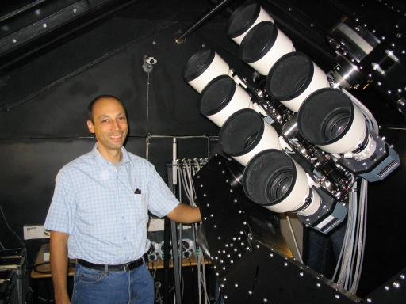

My first degree from Sussex University was a BSc in Mathemetical Physics. My PhD from the University of St Andrews was for the thesis "Accurate Astrophysical parameters for Algol-type binary stars". Prior to taking up a lectureship at Keele University I worked in Denmark for one year and was a post-doctoral research fellow at the Department of Physics & Astronomy at Southampton University.

PLATO (PLAnetary Transits and Oscillations of stars) is the third medium-class mission in ESA’s Cosmic Vision programme. PLATO was adopted by ESA Science Programme Committee in June 2017 and is due to be launched in 2026. Its objective is to find and study a large number of extrasolar planetary systems, with emphasis on the properties of terrestrial planets in the habitable zone around solar-like stars. PLATO has also been designed to investigate seismic activity in stars, enabling the precise characterisation of the planet host star, including its age. I joined the PSM (PLATO science management) in May 2018 as part of the newly-formed work package WP 125500 - Benchmark stars. I lead the effort within this work package to find a characterise eclipsing binary stars that will be used to validate and improve data products from the PLATO mission.
I also contribute to WP114100 "Transit curve modelling tools" and WP122400 "Determination of limb-darkening".
CHEOPS is a small photometric observatory to be launched into low Earth orbit to measure transits of exoplanets. CHEOPS is the first S-class mission from ESA and was selected in October 2012. As an associate member of the CHEOPS science team I am responsible for developing the pycheops software that will be used by the science team and other users to analyse the data from this mission. I am also a member of the comissioning team that will assess the performance of the spaceraft and instrument in the weeks following the launch in December 2019.
I am part of the team at Keele that built and operated the WASP-South instrument at the South African Astronomical Observatory (SAAO), near Sutherland in South Africa. This instrument ran from 2006 until 2018. The data from WASP-South and the SuperWASP instrument in La Palma have been used to discover almost 200 transiting extrasolar planets so far, more than any other ground-based survey. The data from WASP have also been used to study many types of variable stars, particularly pulsating stars and eclipsing binaries. I used data from the WASP project to identify a new class of variable stars called EL CVn-type binaries that both pulsate and eclipse.

Thanks to Auke Slotegraaf for this photo of me at WASP-South.
The main goal of the Araucaria Project is to improve the calibration of the cosmic distance scale in the local Universe.
I am also the academic assessment officer (AAO) for physics and astrophysics modules at Keele.